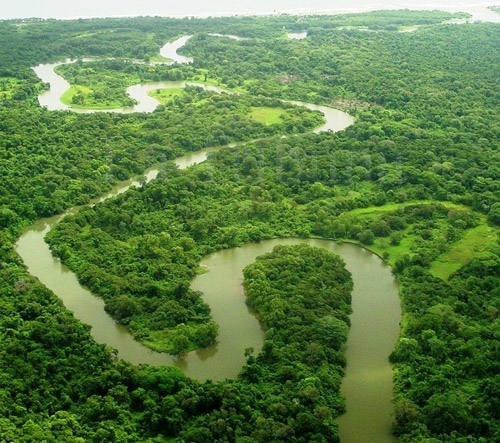
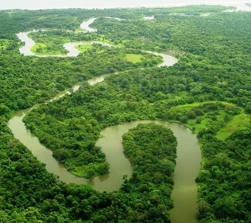

El río Plátano tiene una longitud de 100 kilómetros y se encuentra localizado en el departamento de Gracias a Dios en Honduras. Corre a lo largo de la Reserva de la biosfera de Río Plátano, la cual tiene una extensión de 5250 km2.
Ubicada en la cuenca del río Plátano, esta reserva nombrada patrimonio de la Humanidad de la UNESCO alberga uno de los escasos vestigios de bosque lluvioso tropical de Centroamérica. Su fauna y flora son abundantes y variadas.
En su territorio montañoso, que desciende en pendiente hasta la costa del Caribe, viven más de 2.000 indígenas que han conservado su modo de vida tradicional.
La reserva corresponde en un sentido amplio, con base a las categorías de zona de Holdridge, al bosque tropical húmedo y muy húmedo, albergando áreas marino-costeras importantes y una variedad de hábitats ricos en biodiversidad, que incluyen extensos manglares, asociación de bosques de pino y tique en sabana, humedales, lagunas, arrecifes de coral y cayos. Sin embargo, la mayor parte de río Plátano está cubierta por bosque lluvioso.
El río sirve de refugio y fuente de agua y alimentos para una gran diversidad de plantas y animales en la zona, así como también para más de 2000 indígenas de la zona. El río Plátano tiene un tamaño mediano, el río Coco o Segovia tiene una longitud 7 veces superior (680 km), aun así el río Plátano alberga la mayor biodiversidad en el país. En sus bosques se encuentran árboles como la caoba, el laurel, la carapa y el pino u ocote. Se han identificado 586 especies de plantas, de las cuales 23 de estas se reportaron como nuevas en los registros de la flora hondureña.
La zona es habitada por cuatro grupo indígenas: Garífunas, Misquitos, Pech y Sumo (tawakas), quienes viven de la caza, pesca, recolección de frutas y plantas silvestres, y de la agricultura cultivando maíz, frijoles, yuca, etc.